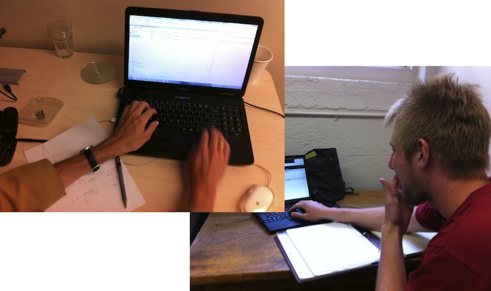
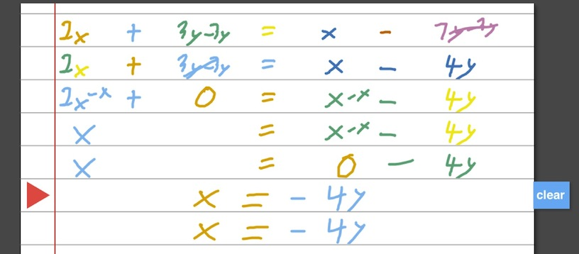
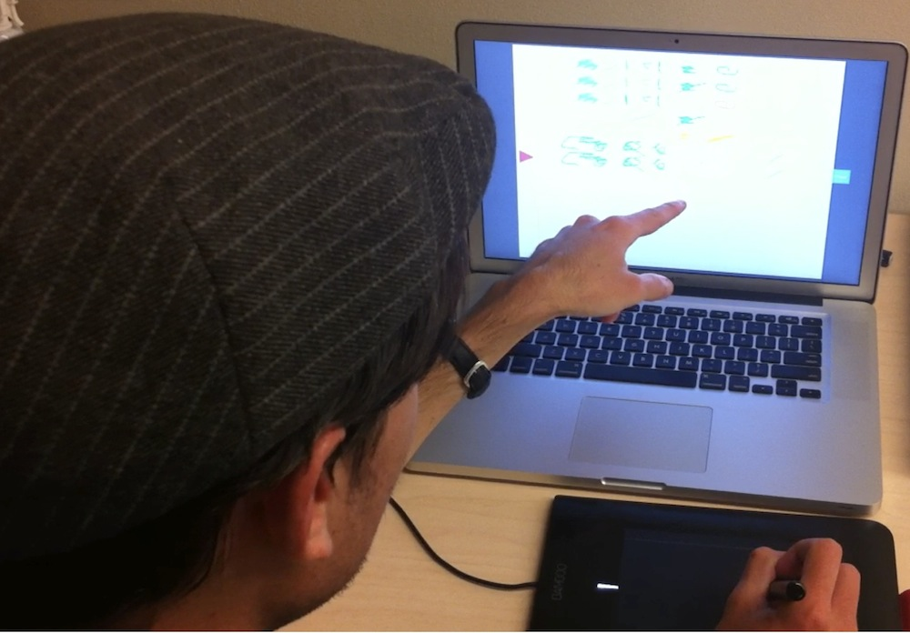
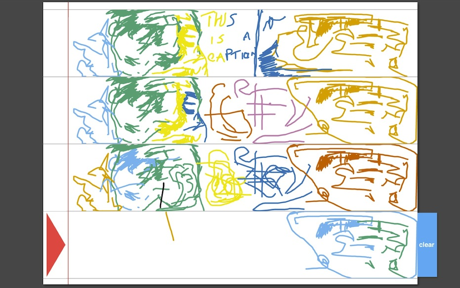

Juxtaquation: Smart Paper for Problem Solving
Truc Nguyen and Alan Joyce
under advisement by Wendy Mackay
Launch Juxtaquation
(works best in Google Chrome)
Juxtaquation was loosely inspired by Juxtapaper, a project to bridge the physical/virtual divide encountered when solving complex problems. Juxtapaper was a mixed-media toolkit that sought to encourage ownership of data exploration and problem solving through the use of physical paper. Physical paper has properties and affordances not readily available in the digital world. Physical paper can be rotated, carried around, easily marked and juxtaposed on top of each other, hence the name "Juxtaquation".
Our project is concerned with the equation editing domain where the disadvantages and advantages of a purely analog paper or completely digital medium are more exaggerated than in other tasks.
 When solving equations on the computer, input can be difficult. Using WYSIWG toolboxes such as Microsoft Equation Editor can be cumbersome because of frequent switching input modalities: typing and acquiring a target. Text editors such as VIM or Emacs have gotten around address this problem for writing code or passages of text that require little formatting using many keyboard shortcuts.
For equation editing, professionally typesetting equations is usually done with the TeX distribution platform, a markup language with a high barrier to entry. It involves learning complex syntax and formatting procedures. However, tweaking parts of an equation (e.g. going through the derivation of a proof) can be much easier due to copying and pasting and other macros.
On paper, an "undo" function incurs significant cost in effort and in the material. Rewriting and shuffling around expressions on paper can be painful when mistakes have to be erased and written again. When you erase too much, you might end up having to redo the entire page because it is in such disarray. Our interviewees mentioned writing each page as if it were a final draft, saying that paper only "becomes a draft when it's wrong".
However, participants cite paper as a quick and easy way to explore spatial dimensions of a problem, which can be more restrictive in computer programs. Interviewees said they use paper to think about how things interact and "I can't make equations come to life on a computer". Later, they will translate these equations to code and use computer to more for explore possibilities, runtime tuning and tweaking parameters. The derivation and conceptual modeling occurs on paper, with the functional version on computer last.
Much research on equation editing in the HCI domain is concerned with recognizing characters and expressions using computer vision and machine learning. Instead trying to infer user intention or intelligently suggest ways for people to solve equations, we focus on making the process of inputting equations easier.
From observing real users and from introspection into our own problem solving processes, we noticed that at each step of solving an equation is a simplification process. Expressions are transformed in pieces until a workable solution reveals itself. When simplifying, only part of an equation might change, while the other pieces remain the same. Copying over the rest of the equation can be a tedious task. On paper, people might use a placeholder such as the ellipsis (...) or an equals sign rotated 90 degrees to indicate that this part gets carried through but does not change. Additionally, rewriting the unchanged parts can introduce more opportunities for error.
 Juxtaquation is currently a client-side HTML5 web application implemented using HTML5 canvas, CSS, and Javascript. Juxtaquation extends Ian Li's Sketchpad, a simple drawing editor built on the jQuery framework and Raphael.js Javascript library for handling SVG graphic elements. Sketchpad makes it easy to to represent mouse actions as stroke objects and be able to manipulate these later.
Since Juxtaquation is on the web, it can be easily deployed and is accessible on any computer with a modern browser. Juxtaquation's input method would ideally be a tablet with a stylus device for writing, though there is nothing preventing one from using the mouse.
We use a k-means clustering algorithm to segment parts of the equation. The heuristic we use in our k-means algorithm is horizontal distance from other strokes, with a penalty for creating multiple clusters of few elements. This algorithm embeds no semantic knowledge of the equation contents, but instead attempts to detect parts of the equation based solely on spatial position.

Visually, Juxtaquation mirrors the appearance of lined paper. A red triangle indicates the active line on the page. The algorithm tries to guess which are distinct pieces (clusters) of an equation and color-codes them to give users feedback. The clusters dynamically update with every new stroke.
The next line of a Juxtaquation document is a mirror of the current line and only becomes actives when one starts writing in it. Deleting or redoing parts of an equation is done by writing in the next line. The algorithm will replace the cluster closest to where the new stroke appears on the next line with whatever you will write next while preserving the rest of the equation.
Our algorithm would often cluster elements together that the user might not have intended, such as operators or the equals since. Since in any equation, an equals sign must be present, our project advisor had suggested we implement a "floating" equals sign that the user can move horizontally. The equals sign acts as a substrate, gently suggesting and framing our system as one used for math and problem solving.
Users might also build up a mental model of how the algorithm works that is not consistent with the horizontal distance heuristic and be surprised when it does not act according to their model. To influence their behavior to conform with our algorithm's expectations, a visual suggestion as to how user should space equations such as gridlines could be added.
Although we do not try to parse the semantics from the equation, perhaps a common and easily detectable action is crossing out to delete. Since deleting is based on clustering, users often try to "group" the items they want to delete on the current line before moving onto the next line. We could simplify this action with a gesture such as crossing out (by drawing a line from bottom left to top right corner as the "imaginary bounding box") to delete.
Another common suggestion users voiced was the lack of ability to undo or start over from a previous line. One participant mentioned "It's such a feeling of failure, its like oh no, I've wasted one of my lines." Currently the red indicator triangle for the current line has no functional purpose, it is used only as an indicator. We could imagine using the triangle as a way to navigate to a previous line or to navigate through elapsed time.
 While preliminary informal user tests demonstrated interest in the Juxtaquation's concept, we hope to design and undertake experimental trials in which we introduce real users to Juxtaquation and observe their performance on various tasks.
Finally, we want to aggregate and synthesize observations from these experiments to assess the suitability of Juxtaquation for the given tasks, gain a clear sense of direction for future improvements in the system, and draw wider conclusions about user interaction with digital paper interfaces.
First, we are planning to bring the existing prototype to a state where it can be effectively tested in real-world settings. For students learning algebra for the first time, Juxtaquation could be leveraged as a tool for capturing "snapshots" of their problem solving process.